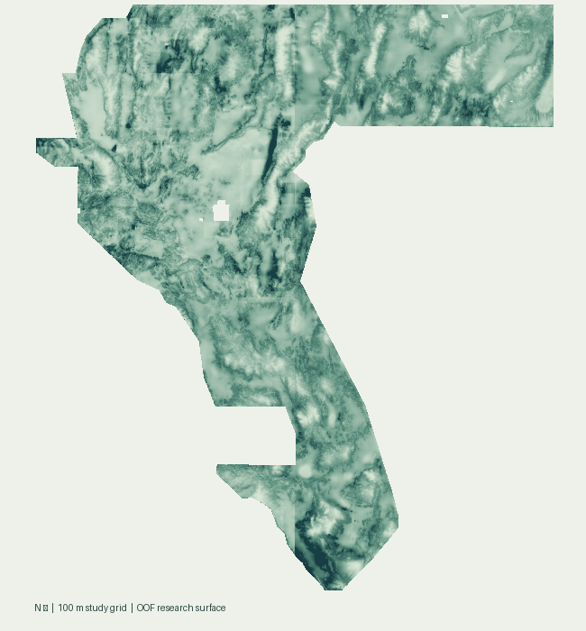

GEMS prize research / SAR-PU lane
A new model.
An honest result.
Can correcting mapping bias help uncover faults hidden beneath low-relief terrain? We tested the idea. This run did not beat its baseline.
Both primary HOLDOUT-DTI values: gems57-pooled-hide-v2, 60,988 withheld positive pixels. Conditional confidence intervals. No ORGANIZER-CONFIRMED result is available.
01 / The decision
Every gate is visible.
Promote only when the evidence supports it. Never substitute a filename for novelty.
Scientific qualification
- Higher pooled holdout DTIFailed
- No loss in the highest-propensity tercileFailed
- Single-feature leakage canariesPassed
- EM convergenceCap reached
- Comparable incumbent holdoutUnavailable
Artifact qualification
- Range, CRS, shape and transformPassed
- New model output; not a copied rasterGenerated
- Literal overlap against registryBlocked
- All-prior clearance / final-dot auditStopped
- Selector approval / organizer acceptanceNot obtained
02 / Matched comparisons
Three assumptions. The same negative result.
Propensity is not identified from these data alone. Scale scenarios are disclosed, not optimized after seeing the holdout.
| Propensity scale | SAR-PU | nnPU | Paired difference | Withheld positives |
|---|---|---|---|---|
| e(z=0) = 0.50Preregistered primary · assumption, not an estimate | 0.02365095% CI [0.022121, 0.025162] | 0.02791795% CI [0.025695, 0.030419] | -0.00426795% CI [-0.005371, -0.003370] | 60,988 |
| e(z=0) = 0.25Sensitivity only · assumption, not an estimate | 0.03402395% CI [0.031795, 0.036149] | 0.04210695% CI [0.038615, 0.045888] | -0.00808395% CI [-0.009998, -0.006406] | 60,988 |
| e(z=0) = 0.75Sensitivity only · assumption, not an estimate | 0.01957295% CI [0.018282, 0.020945] | 0.02191995% CI [0.020251, 0.023838] | -0.00234895% CI [-0.003040, -0.001790] | 60,988 |
All EM fits reached the iteration cap. These results reject this finite-iteration candidate for promotion; they do not prove SAR learning cannot work.

OOF predictions with mapped faults masked. Display stretch only; not calibrated fault probabilities. The validated TIFF remains quarantined.
03 / What the cited raster actually did
Pruning, not a new discovery surface.
The cited GEMSDOE32 raster is a strict subset of its predecessor. Our byte-and-pixel audit found 2,545 removed dots near mapped faults, leaving 37,654.
RASTER-FORENSICS measurements, not scores. Reducing redundant false-positive mass can improve a Tversky ratio. That is a plausible mechanism—not proof of the hidden-label cause.
The prompt’s reported leaderboard result is unverified. No receipt was available, and we make no promise to surpass it.
Read the forensic analysis →04 / The reproducible path
From cached data to a decision.
Check the input bytes
Pinned feature stack, topo and lidar derivatives. Owner mirror, not official authentication.
Separate fault and selection
Five propensity covariates, SAR-EM, clipped risk and a matched nnPU baseline.
Hide whole components
Spatial buffer, canaries, pooled DTI, confidence intervals and high-propensity checks.
Protect the weekly slots
Validate and compare actual pixels. A failed gate means no public raster.
Next session
Resolve the blockers before another fit.
01. Make the registry rule usable
The selector must explicitly address mixed dense and dotted priors. No self-granted exemptions.
02. Establish identification evidence
Obtain complete-mapping evidence, official data provenance, comparable holdout results and real receipts.
03. Preregister a fresh experiment
Set a convergence budget before a new locked holdout. Do not retune the consumed three-scenario run.